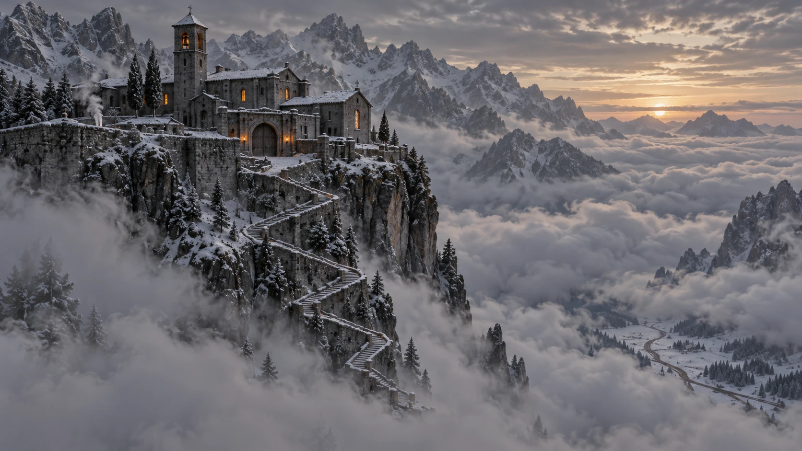
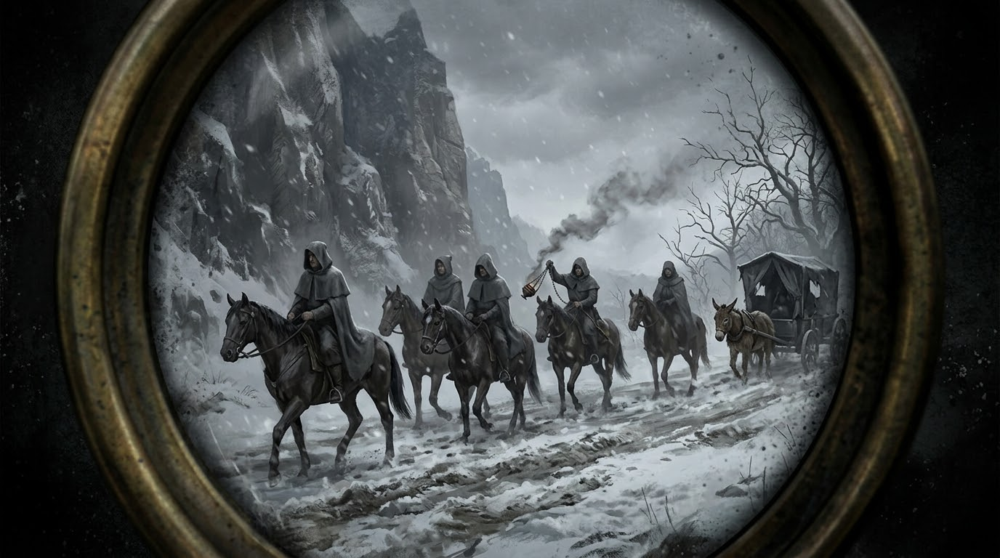

The Codex
Places, factions, sayings
Only what the page has shown. Names on the map that the story has not reached yet are names and nothing more.
Places
13ISaint Ysolde's · the House of Menders

visitedSaint Ysolde's above the cloud, and the Thousand Steps below it. · TapClick to enlarge The House of Menders at the top of the Thousand Steps, which takes the ones the lowland surgeons cannot fix and do not want to watch. Bells ring the hours; the air smells of snow and sulphur and boiled linen. Its infirmary hall is a long double row of cots, and the far ones hold the ones who no longer speak.
First on the page: Prologue · II — The Steps
IIThe Thousand Stepsvisited
The switchback stair cut into the cliff below Saint Ysolde's, with cloud on one side and a wind that comes round the shoulder of the mountain with a knife in it. Everyone says a thousand. Wren has counted eleven hundred and seventeen.
First on the page: Prologue · II — The Steps
IIIThe winch-house · at the foot of the Stepsvisited
At the foot of the Thousand Steps, where the stair comes out of the cloud at the valley floor: a grey block with a thread of smoke of its own, and the cage the House's loads come up by. Rae Thorne's cart stands beside it with its shafts up and two oxen in the snow, standing the way oxen stand, as if they had been told to wait and meant to do it all winter.
First on the page: Prologue · II — The Steps
IVColdmerenot yet
A place below the mountain with an inn, where the Confessors' list of the Faithless was read aloud; the news climbed to the House by carter, lay brother and kitchen.
First on the page: Chapter 1 · Scene 1 — The Reading of the Knots
VThe Holloway · the roadnot yet
The road below the Steps, a brown thread across a white field from the infirmary window. Six grey riders and a cart were on it, with a smudge of smoke above them.
First on the page: Chapter 1 · Scene 1 — The Reading of the Knots
VIThe Lowmarchvisited
Darrow's country: he had the fastest feet in it, and its children count the lances in a rhyme. Its villages have bell-houses, from whose steps the Crown's heralds read that the Grace had left the knights of Harrow Ford, and its surgeons sent him north.
First on the page: Prologue · I — Harrow Ford
VIIThe river Wendvisited
Cold and fast, brown with three days of rain off the hills at midsummer. It carried the Ninth downstream like driftwood.
First on the page: Prologue · I — Harrow Ford
VIIIHarrow Fordvisited
A crossing of the Wend at the edge of the Thornwild, with standing stones on the far bank. Here, halfway across, the Grace went out of the Ninth, and Darrow's knee gave way with no blade near it.
First on the page: Prologue · I — Harrow Ford
IXThe Thornwildnot yet
The forest beyond the far bank of the Wend, home of the clans. In the dark under its trees a line of grey, armored figures stood very still while the river screamed.
First on the page: Prologue · I — Harrow Ford
XCaldennot yet
Where the Oathspire stands, and where the Faithless are told they may kneel anew. Somewhere in a warm room there, Darrow believes, his name was written first on a list.
First on the page: Prologue · III — The Binding
XIThe Oathspire · in Caldennot yet
In Calden. The heralds say the Faithless will be received there with mercy and permitted to kneel anew; Maelis calls that the Crown's way, and fast.
First on the page: Prologue · II — The Steps
XIIEdgemoornot yet
The place in Darrow's name as the Reckoning writes it: Ser Darrow of Edgemoor.
First on the page: Chapter 1 · Scene 1 — The Reading of the Knots
13The Greywaternot yet
The mountains north of the Lowmarch into which the surgeons sent him; Saint Ysolde's stands above the cloud on a shoulder of them.
First on the page: Prologue · II — The Steps

Factions
8IThe Ninth Lance
Darrow's company: sixty knights and sixty squires on the west bank of Harrow Ford. Nineteen came home. He knows the other forty-one names and does not say them.
IIThe Sixth Lance
Hollis Garrow's company, ordered with the Ninth to clear the ford.
IIIThe Second Lance
Aldric Vane's company, held in reserve. When the Grace failed it sat its horses on the west bank in perfect order, untouched, and watched.
IVThe Crown
The power whose Oathstones fill a kneeling knight with the Grace, and whose heralds proclaim that the Grace left the knights of Harrow Ford for the faithlessness of their oaths.
VThe Confessors

Through Sister Pell's glass: six grey cloaks, a cart and a censer on the Holloway. · TapClick to enlarge Grey cloaks who climb mountains for names, not for the Hollowed or the dying. Six of them ride the Holloway with a cart and a censer smoking in the snow, carrying a list of the Faithless at Saint Ysolde's that was read aloud at the inn in Coldmere: the ones they have come to bring down to kneel. Hollis's name is second. Asked who was first, Wren only looked at Darrow.
VIThe House of Menders
The House above the Thousand Steps that takes the ones the lowland surgeons cannot fix and do not want to watch. Mender Vorne did the Binding there with an art the Crown burned people for, three hundred years ago.
VIIThe Faithless
What the heralds call the knights who came back from Harrow Ford, to be received with mercy at the Oathspire and permitted to kneel anew. Hollis's answer, on the cart: kneel to that.
VIIIThe clans of the Thornwild
Fighters with long knives and boar spears, drawn up at the ford in a ragged screen in front of carts, old people, children and a goat, and looking behind them into the trees.

Sayings
7IKneel to that.
Hollis's answer to the heralds' proclamation, on the cart from Harrow Ford; nobody laughed (Prologue).
IIRide wide today.
what Aldric said at the ford (Prologue).
IIIThe quiet is a liar.
Maelis, on the soft season (Ch 1).
IVNobody's taking anyone.
Hollis to Benedek Orrin, of the Confessors: not up eleven hundred steps in the snow (Ch 1 Interlude).
VStone and Crown.
a soldier's oath; Hollis swears it over the nine steps he took on the wooden leg (Ch 1 Interlude).
VIFeed it or it goes out.
Maelis, of the built fire (Ch 1 Sc 2).
VIIThey'll count you up. Don't help.
Rae Thorne, the one thing she said to Darrow on the last cart, as they lifted him onto the litter (Prologue).
Things
9IField-stones
slabs of black Oathstone in iron frames, one per lance, hauled on ox-carts; knights kneel and touch them before battle to be filled with Grace (Prologue).
IISister Pell's glass
the spyglass in the bell tower (Ch 1).
IIIThe dawn forms
the slow, dull work Maelis sets him each morning; afterward the leg lies a little straighter on the blanket, which is the point of them (Ch 1).
IVThe Reading of the Knots
Maelis's reading of the Binding: pipe between her teeth, two fingers either side of the kneecap, eyes shut. Darrow has stopped asking what she feels for; she has stopped answering (Ch 1).
VHollis's leg
the wooden leg the lay brothers made him: beech and a leather cup, fitting the way a boot fits someone else. The writ from Harrow Ford, folded and unread, now lies in its cup (Ch 1 Interlude).
VIThe writ
the order from command at Harrow Ford, the Sixth and the Ninth to clear the ford and the Second in reserve; Hollis broke its wax with his thumb without looking, kept it folded small inside his shirt, wax inward, until the morning the grey cloaks were seen, and then hid it in the cup of his wooden leg (Prologue; Ch 1 Interlude).
VIIThe two fires
Maelis's teaching behind the cell door: one fire is poured in and can be taken back by the hand that poured it; the other is built, kindled by one's own work, fed and kept, and cannot be poured or taken. The script of the Reckoning counts only the built one (Ch 1 Sc 2).
VIIIThe Emberwardens
an order that lived by the built fire; the Crown burned them three hundred years ago, halls, books and people, and made their name a curse: ember-mad (Ch 1 Sc 2).
IXRae's bell
the small brass bell on a cord at the carter's belt, which rings when the cart jolts; rung three times at the foot of the Steps, it was answered from the cloud (Prologue).
Beasts and others
1IThistle
Darrow's grey mare; went down in the Wend at Harrow Ford. Fate unknown (Prologue).